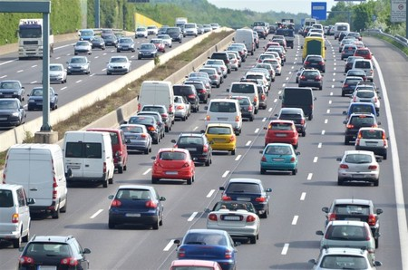
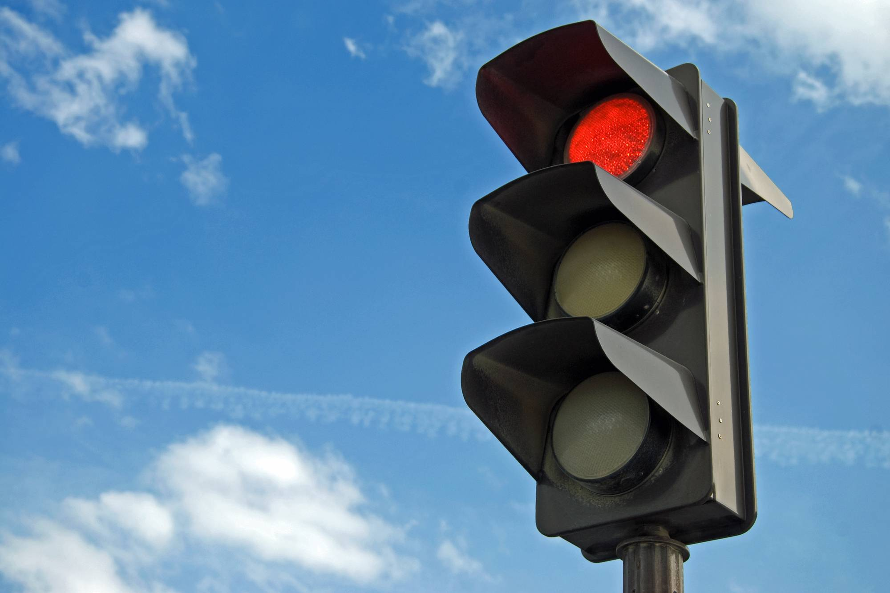

Bienestar por el ciudadano
Trabajamos pensando en ti. Nuestro objetivo es garantizar calles seguras y ordenadas, donde el tránsito fluya con armonía y las personas puedan desplazarse con tranquilidad. Cada semáforo que reparamos es un paso más hacia una ciudad más segura, donde peatones, ciclistas y conductores convivan en equilibrio.
Sabemos que los pequeños detalles hacen una gran diferencia. Por eso, no solo nos enfocamos en reparar lo que está roto, sino en prevenir futuros problemas, asegurándonos de que cada sistema opere al máximo de su capacidad. Nuestro trabajo no es solo técnico; es una labor que impacta directamente en el bienestar de la comunidad.
Disminución de accidentes viales
Entendemos que la seguridad vial es fundamental para la calidad de vida de todos. Cada semáforo que repararemos o mantendremos no es solo una señal de tránsito, sino un elemento clave para prevenir accidentes y proteger a cada persona que transita por nuestras ciudades.
Nuestra labor va más allá de la reparación técnica; buscamos reducir los riesgos viales mediante un monitoreo constante, la optimización de sistemas de semáforos y la mejora de su funcionamiento. Con semáforos que operan de manera eficiente y precisa, se reduce la probabilidad de confusión o errores que podrían resultar en colisiones o accidentes.

Seguridad y confianza en los semáforos
Creemos que la seguridad vial empieza con la confianza en los sistemas de señalización. Cada semáforo que reparamos o mantenemos está diseñado para ofrecerte la máxima fiabilidad en cada cruce, garantizando que las luces siempre funcionen de manera precisa y eficiente. Sabemos que una señal adecuada es esencial para prevenir accidentes y asegurar el bienestar de todos los usuarios de la vía.
Nuestro compromiso es brindar un servicio de alta calidad, donde la tecnología y la experiencia se unen para proporcionar semáforos que no solo regulen el tránsito, sino que también generen confianza. Porque cuando confías en el sistema de señalización, puedes moverte con seguridad y tranquilidad.

Promover nuevas soluciones tecnologicas
Nos apasiona la innovación. Sabemos que las tecnologías avanzadas son clave para mejorar la seguridad vial y optimizar el funcionamiento de los semáforos. Por eso, estamos comprometidos en integrar soluciones tecnológicas de vanguardia que hagan el tránsito más seguro, eficiente y sostenible.
Desde semáforos inteligentes que se adaptan en tiempo real a las condiciones del tráfico, hasta sistemas de monitoreo remoto que garantizan el mantenimiento predictivo, estamos a la vanguardia de la evolución tecnológica en la señalización vial. Implementamos estas innovaciones para minimizar fallos, reducir los tiempos de respuesta y mejorar la experiencia de los conductores y peatones.